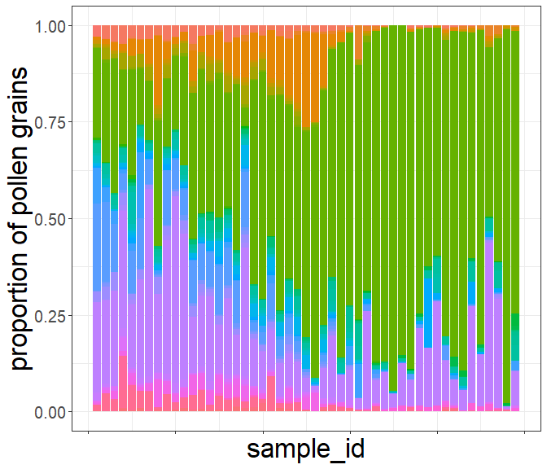
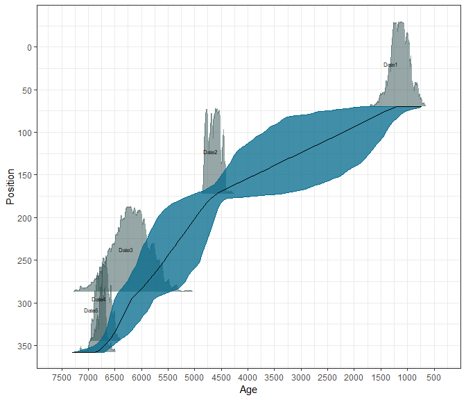
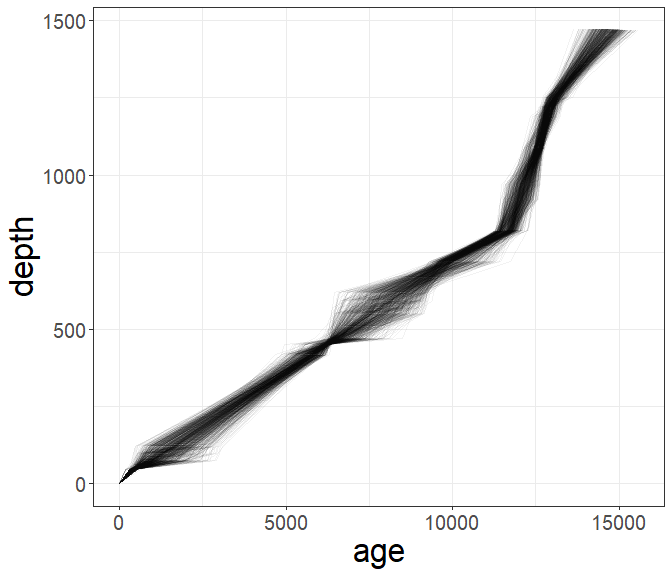
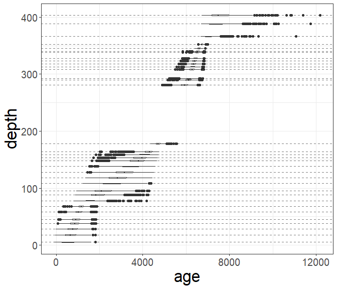
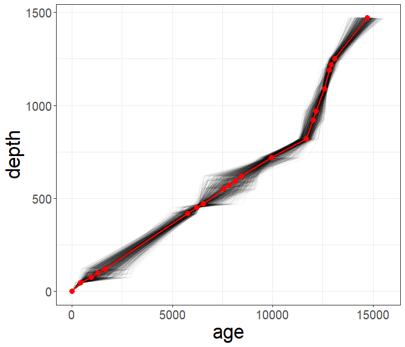
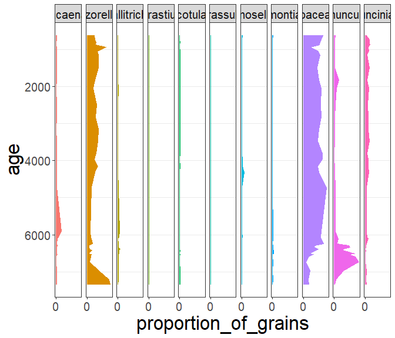
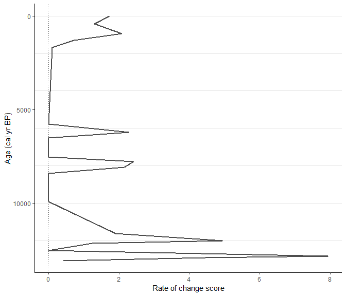

This workflow should show full strength of RRatepol package and serve as step by step guidance starting from downloading dataset from Neotoma, building age-depth models, to estimating rate-of-change using age uncertainty.
:warning: This workflow is only meant as example: There are several additional steps for data reparation which should be done to really use the data from Neotoma!
Make a list of packages needed to from CRAN
package_list <-
c(
"tidyverse", # general data wrangling and visualisation
"pander", # nice tables
"Bchron", # age-depth modeling
"janitor", # string cleaning
"remotes" # installing packages from GitHub
)Install all packages from CRAN using {renv} package
lapply(
package_list, renv::use
)Install packages from GitHub
# Install R-Ratepol
remotes::install_github("HOPE-UIB-BIO/R-Ratepol-package")
# Install neotoma2
remotes::install_github("NeotomaDB/neotoma2")library(tidyverse) # general data wrangling and visualisation
library(pander) # nice tables
library(RRatepol) # rate-of-vegetation change
library(neotoma2) # obtain data from Neotoma database
library(Bchron) # age-depth modeling
library(janitor) # string cleaningHere we have selected the XXX record.
sel_dataset_download <-
neotoma2::get_downloads(52406)
sel_chron_control_table_download <-
neotoma2::chroncontrols(sel_dataset_download)# get samples
sel_counts <-
neotoma2::samples(sel_dataset_download)
# select only "pollen" taxa
sel_taxon_list_selected <-
neotoma2::taxa(sel_dataset_download) %>%
dplyr::filter(element == "pollen") %>%
purrr::pluck("variablename")
# prepare taxa table
sel_counts_selected <-
sel_counts %>%
as.data.frame() %>%
dplyr::mutate(sample_id = as.character(sampleid)) %>%
tibble::as_tibble() %>%
dplyr::select("sample_id", "value", "variablename") %>%
# only include selected taxons
dplyr::filter(
variablename %in% sel_taxon_list_selected
) %>%
# tunr into wider format
tidyr::pivot_wider(
names_from = "variablename",
values_from = "value",
values_fill = 0
) %>%
# clean names
janitor::clean_names()
head(sel_counts_selected)[, 1:5]| sample_id | euclea | brucea | tribulus | cassia_type |
|---|---|---|---|---|
| 520307 | 1 | 0 | 0 | 0 |
| 520308 | 0 | 2 | 0 | 0 |
| 520311 | 0 | 0 | 3 | 0 |
| 520312 | 3 | 1 | 0 | 1 |
| 520313 | 1 | 0 | 0 | 1 |
| 520310 | 1 | 0 | 0 | 0 |
Here, we strongly advocate that attention should be paid to the section of ecological ecological group, as well, as harmonisation of the pollen taxa. However, that is not subject of this workflow.
We can now try to visualise the taxa per sample_id
sel_counts_selected %>%
tibble::rowid_to_column("ID") %>%
tidyr::pivot_longer(
cols = -c(sample_id, ID),
names_to = "taxa",
values_to = "n_grains"
) %>%
ggplot2::ggplot(
mapping = ggplot2::aes(
x = ID,
y = n_grains,
fill = taxa
),
) +
ggplot2::geom_bar(
stat = "identity",
position = "fill"
) +
ggplot2::labs(
x = "sample_id",
y = "proportion of pollen grains"
) +
ggplot2::theme(
axis.text.x = ggplot2::element_blank(),
legend.position = "bottom"
)
Extract depth for each level
sel_level <-
neotoma2::samples(sel_dataset_download) %>%
tibble::as_tibble() %>%
dplyr::mutate(sample_id = as.character(sampleid)) %>%
dplyr::distinct(sample_id, depth) %>%
dplyr::relocate(sample_id)
head(sel_level)| sample_id | depth |
|---|---|
| 520307 | 0 |
| 520308 | 47 |
| 520311 | 77 |
| 520312 | 97 |
| 520313 | 120 |
| 520310 | 420 |
We will recalculate new age-depth model ‘de novo’ using Bchron package.
Chrolonogy control table contains all the dates (mostly radiocarbon) to create age-depth model.
Here we only present few of the important steps of preparation of chron.control table. There are many more potential issues issues but solving those is not the focus of this workflow.
# first check which chronologies were used
print(sel_chron_control_table_download)
# prepare the table
sel_chron_control_table <-
sel_chron_control_table_download %>%
# here select the ID of oe of the chronology
dplyr::filter(chronologyid == 37274) %>%
tibble::as_tibble() %>%
# here we calculate the error as the avarage as the agelimitolder and
# agelimityounger
dplyr::mutate(
error = round((agelimitolder - agelimityounger) / 2)
) %>%
# as Bchron cannot accept error of 0, we need to replace the value with 1
dplyr::mutate(
error = replace(error, error == 0, 1),
error = ifelse(is.na(error), 1, error)
) %>%
# we need to specifify which calibration curve should be used for what point
dplyr::mutate(
curve = ifelse(as.data.frame(sel_dataset_download)["lat"] > 0, "intcal20", "shcal20"),
curve = ifelse(chroncontroltype != "Radiocarbon", "normal", curve)
) %>%
tibble::column_to_rownames("chroncontrolid") %>%
dplyr::arrange(depth) %>%
dplyr::select(
chroncontrolage, error, depth, thickness, chroncontroltype, curve
)
head(sel_chron_control_table)| chroncontrolage | error | depth | thickness | chroncontroltype | curve |
|---|---|---|---|---|---|
| 0 | 1 | 0 | 0 | Core top | normal |
| 360 | 70 | 47 | 1 | Radiocarbon | intcal20 |
| 2879 | 135 | 198 | 1 | Radiocarbon | intcal20 |
| 4300 | 65 | 357.5 | 1 | Radiocarbon | intcal20 |
| 5480 | 50 | 453.5 | 1 | Radiocarbon | intcal20 |
| 8400 | 70 | 691.5 | 1 | Radiocarbon | intcal20 |
In this toy example we will use only iteration multiplier (i_multiplier) of 0.1 to reduce the computation time. However, we strongly recommend to increase it to 5 for any normal age-depth model construction.
i_multiplier <- 0.1 # increase to 5
# those are default values suggested by the bchron package
n_iteration_default <- 10e3
n_burn_default <- 2e3
n_thin_default <- 8
# lets multiply them by our i_multiplier
n_iteration <- n_iteration_default * i_multiplier
n_burn <- n_burn_default * i_multiplier
n_thin <- max(c(1, n_thin_default * i_multiplier))
# run bchron
sel_bchron <-
Bchron::Bchronology(
ages = sel_chron_control_table$chroncontrolage,
ageSds = sel_chron_control_table$error,
positions = sel_chron_control_table$depth,
calCurves = sel_chron_control_table$curve,
positionThicknesses = sel_chron_control_table$thickness,
iterations = n_iteration,
burn = n_burn,
thin = n_thin
)Visualy check the age-depth models
plot(sel_bchron)
Let’s firts extract posterion ages from the age-depth model (i.e. possible ages)
age_position <-
Bchron:::predict.BchronologyRun(object = sel_bchron, newPositions = sel_level$depth)
age_uncertainties <-
age_position %>%
as.data.frame() %>%
dplyr::mutate_all(., as.integer) %>%
as.matrix()
colnames(age_uncertainties) <- sel_level$sample_id
head(age_uncertainties, n = 8)[, 1:8]| 520307 | 520308 | 520311 | 520312 | 520313 | 520310 | 520309 | 520314 |
|---|---|---|---|---|---|---|---|
| 0 | 382 | 1197 | 1741 | 2136 | 5829 | 6167 | 6455 |
| 0 | 382 | 1159 | 1611 | 1789 | 5639 | 6167 | 6369 |
| 0 | 382 | 1564 | 1822 | 2118 | 5315 | 6036 | 6464 |
| 0 | 382 | 929 | 1358 | 1859 | 5057 | 5746 | 6385 |
| 0 | 343 | 1344 | 1861 | 2238 | 5803 | 6289 | 7405 |
| 0 | 343 | 1480 | 1707 | 1959 | 5743 | 6269 | 6727 |
| 0 | 343 | 809 | 1584 | 2174 | 6078 | 6294 | 6473 |
| 0 | 303 | 1319 | 1656 | 2131 | 6203 | 6307 | 6538 |
We can visualise those “possible ages”
data_age_uncertainties <-
age_uncertainties %>%
as.data.frame() %>%
tibble::rowid_to_column("ID") %>%
tidyr::pivot_longer(
cols = -ID,
names_to = "sample_id",
values_to = "age"
) %>%
dplyr::left_join(
sel_level,
by = dplyr::join_by(sample_id)
)Each line is a single potential age-depth result
(
fig_age_uncertainties <-
data_age_uncertainties %>%
ggplot2::ggplot(
mapping = ggplot2::aes(
x = age,
y = depth
)
) +
ggplot2::geom_line(
mapping = ggplot2::aes(
group = ID
),
alpha = 0.05,
linewidth = 0.1
)
)
We can visualise the result as range of the values, each line represent one depth in our data
data_age_uncertainties %>%
ggplot2::ggplot(
mapping = ggplot2::aes(
x = age,
y = depth,
group = depth
)
) +
ggplot2::geom_hline(
yintercept = sel_level$depth,
lty = 2,
color = "gray50"
) +
ggplot2::geom_boxplot()
Let’s take the median age of all possibilities as our default
sel_level_predicted <-
sel_level %>%
dplyr::mutate(
age = apply(
age_uncertainties, 2,
stats::quantile,
probs = 0.5
)
)
head(sel_level_predicted)| sample_id | depth | age |
|---|---|---|
| 520307 | 0 | -1 |
| 520308 | 47 | 431 |
| 520311 | 77 | 984.5 |
| 520312 | 97 | 1320 |
| 520313 | 120 | 1680 |
| 520310 | 420 | 5768 |
We can visualise that by drawing a red line
fig_age_uncertainties +
ggplot2::geom_point(
data = sel_level_predicted,
color = "red",
size = 3
) +
ggplot2::geom_line(
data = sel_level_predicted,
color = "red",
size = 1
)
Lets make a simple pollen diagram with proportions of pollen taxa
sel_counts_selected %>%
tibble::column_to_rownames("sample_id") %>%
RRatepol:::fc_transfer_into_proportions() %>%
tibble::rownames_to_column("sample_id") %>%
dplyr::inner_join(
sel_level_predicted,
by = dplyr::join_by(sample_id)
) %>%
tidyr::pivot_longer(
cols = -c(sample_id, depth, age),
names_to = "taxa",
values_to = "proportion_of_grains"
) %>%
ggplot2::ggplot(
mapping = ggplot2::aes(
y = age,
x = proportion_of_grains,
xmax = proportion_of_grains,
xmin = 0,
fill = taxa,
col = taxa
),
) +
ggplot2::geom_ribbon() +
ggplot2::scale_y_continuous(trans = "reverse") +
ggplot2::scale_x_continuous(breaks = c(0, 1)) +
ggplot2::facet_wrap(~taxa, nrow = 1) +
ggplot2::theme(
legend.position = "none"
)
Here we use the the prepared data to estimate the rate of vegetation change. We will use the method of the binning with the mowing window, Shepard’s 5-term filter as data smoothing Chi-squared coefficient as dissimilarity coefficient. This is again a toy example for a quick computation and we would recommend increasing the randomisations to 10.000 for any real estimation.
sel_roc <-
RRatepol::fc_estimate_RoC(
data_source_community = sel_counts_selected,
data_source_age = sel_level_predicted,
smooth_method = "none",
DC = "chisq",
Working_Units = "levels",
standardise = FALSE
)RRatepol::fc_plot_RoC_sequence(
data_source = sel_roc
)